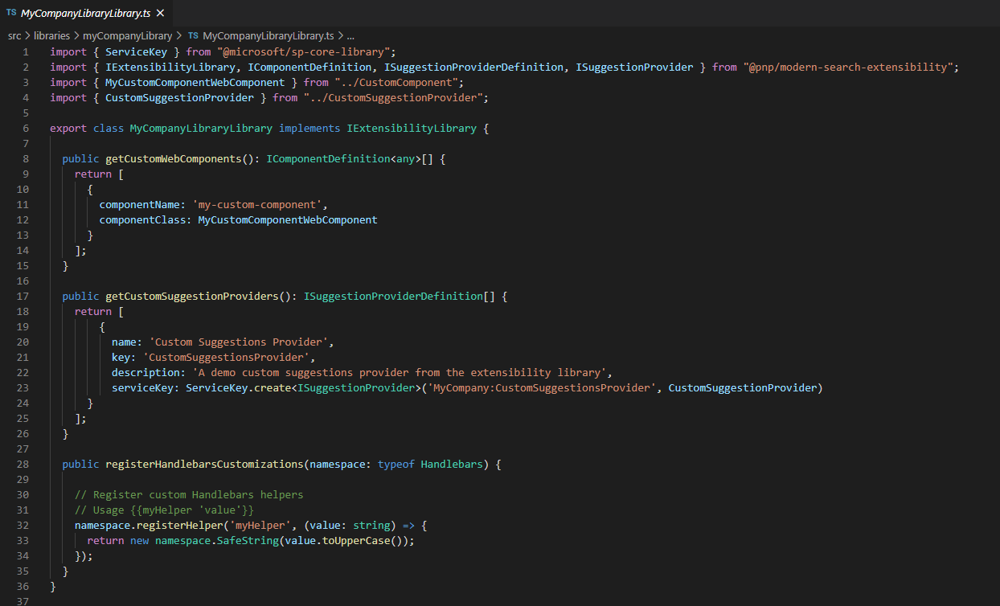

Extensibility possibilities¶
This solution supports different levels of customizations depending your requirements:
- 'Basic' customizations: these include custom settings for data sources, search box, verticals and filters Web Parts + minor updates to existing layouts by adding custom HTML markup (ex: add a custom field in the UI from a data source), updates to builtin layouts fields ('Cards','Details List' and 'People'), etc. They only require HTML, CSS and Handlebars skills to be done. Typically a super user or a webmaster could do that.
- 'Advanced' customizations: these include major updates like adding a new data source, layout, component or suggestions provider. These are build from scratch and require SharePoint Framework development skills to be done. Typically, a front-end/SharePoint developer could do that.
Note
Extensibility samples are centralized in a dedicated repository: https://github.com/microsoft-search/pnp-modern-search-extensibility-samples/tree/main
Basic customizations¶
'Basic' customizations cover the layout templates updates with HTML, CSS and Handlebars. Refer to the templating documentation to know more.
Advanced customizations¶
The solution uses the concept of 'extensibility libraries'. Basically, these are SharePoint Framework library components you put in the global or site collection app catalog that will be loaded automatically by Web Parts to enhance the experience and options (ex: new data source with new options, custom layout, etc.). Simple as that!
As a demonstration of capabilities, all builtin data sources, layouts, web components or suggestions providers are built using the same exact interfaces and methods that are publicly available in the
@pnp/modern-search-extensibilitySPFx library project.All documentation procedures for extensions are based on the demo extensibility library available in the same repository that you can use as reference.
Prerequistes¶
For your project to be a valid extensibility library, you must have the following prerequisites:
- Your project must be an SPFx library component.
- The main entry point of your library must implement the
IExtensibilityLibraryinterface from the@pnp/modern-search-extensibilitylibrary. - You library manifest ID must be registered in the Web Part where you want to use the extension.
SPFx version
The SPFx library project must use the same SPFx version as the main solution (check compatibility matrix). Otherwise you may face issues at build time. See GitHub issue #1893. Starting with PnP Modern Search v4.21.0, the solution uses the Heft-based toolchain. Version 4.23.3 and later use SPFx v1.23.0. Your extensibility library must also use the Heft toolchain and matching SPFx version.
Extensibility package v2.0.0+
Starting with @pnp/modern-search-extensibility v2.0.0, the npm package has zero SPFx runtime dependencies. SPFx types like WebPartContext and ServiceScope are typed as any in the base classes. No code changes are required when upgrading — existing extensions compile as-is since they already import SPFx types directly from @microsoft/sp-*. Optionally, you can pass your own SPFx types as a second generic parameter for improved intellisense (e.g., extends BaseDataSource<IMyProps, WebPartContext>). See the custom data source or custom layout documentation for examples.
Supported extensions¶
Each Web Part type in the solution supports several extensions or no extension at all. It means even your extensibility library contains all possible extensions, they won't be loaded if the Web Part does not support them.
| Web Part type | Supported extensions |
|---|---|
| Search Results |
|
| Search Filters |
|
| Search box |
|
| Search Verticals | None. |
For backward compatibility, a Search Filters Web Part with its extensibility configuration left at the disabled default inherits enabled libraries from connected Search Results Web Parts. As soon as libraries are configured explicitly on Search Filters, that configuration takes precedence.
Context and data available to each extension type¶
Different extension types receive different runtime context. This table summarises what each extension can access so you don't have to dig through each individual doc page.
| Extension type | Base class | Runtime context exposed | How to access SPFx context |
|---|---|---|---|
| Custom Data Source | BaseDataSource<TProps, TContext> |
this.context (TContext), this.properties (TProps), this.serviceScope (any), this.editMode, this.serviceKeys, this.render(). Plus IDataContext argument on every getData(dataContext) call (paging, filters, query text, sort, verticals). |
this.serviceScope.consume(<ServiceKey>) or cast TContext to WebPartContext. |
| Custom Layout | BaseLayout<TProps, TContext> |
this.context, this.properties, this.serviceScope, this.editMode. |
Same as above. |
| Custom Query Modifier | BaseQueryModifier<TProps, TContext> |
this.context, this.properties, this.serviceScope, this.endWhenSuccessfull. Receives queryText: string argument on every modifyQuery(queryText) call. |
Same as above. |
| Custom Suggestion Provider | BaseSuggestionProvider<TProps, TContext> |
this.context, this.properties, this.serviceScope, this.isZeroTermSuggestionsEnabled. Receives queryText on getSuggestions(queryText). |
Same as above. |
| Custom Web Component | BaseWebComponent (extends HTMLElement) |
this._serviceScope (root scope, any), this._webPartServiceScopes: Map<webPartId, scope> (per-WP scopes), this._webPartServiceKeys: Map<webPartId, keys>, HTML attributes via this.resolveAttributes(), optional theme via overriding getThemeVariant(). |
this._serviceScope.consume(PageContext.serviceKey), etc. Web components do not auto-receive a TContext. |
| Handlebars helper / partial | n/a — registered on the per-WP namespace | Only what the template explicitly passes via hash args ({{myHelper x theme=@root.theme}}) and what your closure captured at registerHandlebarsCustomizations time. |
Capture serviceScope in your library's constructor and reference it inside the helper closure. See Handlebars customizations for the full @root reference. |
| Adaptive Card action handler | IExtensibilityLibrary.invokeCardAction(action) |
The IAdaptiveCardAction argument: type, title, url, data. |
Capture serviceScope in your library's constructor (see example below). |
Generic TContext pattern (v2.0.0+)¶
Starting with @pnp/modern-search-extensibility v2.0.0, every base class accepts an optional second generic for typing context:
import { BaseDataSource } from '@pnp/modern-search-extensibility';
import { WebPartContext } from '@microsoft/sp-webpart-base';
export class MyDataSource extends BaseDataSource<IMyProps, WebPartContext> {
public async getData() {
const url = this.context.pageContext.web.absoluteUrl;
// ... fully typed!
}
}
You can use any context shape: WebPartContext, BaseComponentContext, or your own typed alias. The base class typings stay any if you don't specify, so no migration is required.
Quick reference — what's where¶
- Per-WP runtime context (PageContext, etc.) →
serviceScope.consume(ServiceKey)in any base class, or_serviceScope.consume(ServiceKey)in a web component. - Web Part property bag →
this.properties(typed asTPropsyou pass to the generic). - Selected filters / paging / query / sort / vertical at fetch time →
IDataContextargument onBaseDataSource.getData(). - Theme → React layouts/components: pass
themeVariantthrough props. Web components: overridegetThemeVariant()(slim package) or passdata-theme-variantin the template. Helpers: readoptions.hash.themefrom atheme=@root.themehash arg. - Template root data for Handlebars →
@root.<field>. The exact shape is built by each web part'sgetTemplateContext()method — seeSearchResultsContainer.getTemplateContext()andSearchFiltersContainer.getTemplateContext()for the verified field list, or theISearchResultsTemplateContext/ISearchFiltersTemplateContextinterface definitions. Common fields:theme,properties,context.{site,web,user,list,listItem,cultureInfo},data,slots,inputQueryText,instanceId.
Register your extensibility library with a Web Part¶
When a Web Part type supports one or multiple extensions, you can register them going to the last property pane confguration page in the 'Extensibility configuration' section:
{kind=link}
From here, you can add the manifest IDs of your libraries and decide to enable or disabled certain libraries. The manifest ID can be found in the <your_library_name>.manifest.json file:
{kind=link}
{kind=link}
Multiple librairies can be registered for a single Web Part instance allowing you to split your extensions into multiple projects (in the end, they will be all concatenated). For instance, this could be convenient when extensions come from different IT providers.
Create an extensibility library¶
To create an extensibility library, you have the choice to reuse the one provided in the GitHub repository or start from scratch. In this case:
Toolchain
Starting with SPFx v1.22, the SharePoint Framework uses a new Heft-based build toolchain, replacing the previous Gulp-based toolchain. New projects generated with the SPFx v1.22+ Yeoman generator will use Heft by default. If you are working with SPFx v1.21.1 or earlier, continue using the Gulp-based instructions. See SharePoint Framework Toolchain: Heft & Webpack for details.
Common steps (both toolchains)¶
- Create a new SharePoint Framework project of type 'Library' with
yo @microsoft/sharepoint. - Add an npm reference to
@pnp/modern-search-extensibilitylibrary usingnpm i @pnp/modern-search-extensibility --save. - Install npm-package
html-loaderas a dev-dependency usingnpm i html-loader@4.2.0 --save-dev.
Configure the html-loader¶
The extensibility library requires html-loader to load Handlebars templates from .html files without minification. The configuration differs depending on which toolchain you are using.
With the Heft-based toolchain, webpack customizations are done through patch files registered in a config/webpack-patch.json file, instead of gulpfile.js. No gulpfile.js is needed.
Step 1. Create the file config/webpack-patch.json in your project:
{
"$schema": "https://developer.microsoft.com/en-us/json-schemas/spfx-build/webpack-patch.schema.json",
"patchFiles": [
"./config/webpack-patch/html-loader.js"
]
}
Step 2. Create the folder config/webpack-patch/ and add the file config/webpack-patch/html-loader.js:
'use strict';
module.exports = function (webpackConfig) {
// Remove the default html rule
webpackConfig.module.rules = webpackConfig.module.rules.filter(rule => {
return rule.test.toString() !== '/\\.html$/';
});
// Add html-loader without minimize so that we can use it for handlebars templates
webpackConfig.module.rules.push({
test: /\.html$/,
loader: 'html-loader',
options: {
minimize: false
}
});
return webpackConfig;
};
Tip
For more information on customizing webpack with Heft, see Customize webpack with the Heft Webpack Patch plugin and Andrew Connell's walkthrough.
Insert the following lines of code into gulpfile.js of your SPFx-project:
const envCheck = build.subTask('environmentCheck', (gulp, config, done) => {
build.configureWebpack.mergeConfig({
additionalConfiguration: (generatedConfiguration) => {
// Remove the default html rule
generatedConfiguration.module.rules = generatedConfiguration.module.rules.filter(rule => {
return rule.test.toString() !== '/\\.html$/';
});
// Add html loader without minimize so that we can use it for handlebars templates
generatedConfiguration.module.rules.push({
test: /\.html$/,
loader: 'html-loader',
options: {
minimize: false
}
});
return generatedConfiguration;
}
});
done();
});
build.rig.addPreBuildTask(envCheck);
Implement the extensibility interface¶
- In the main entry point, implement the
IExtensibilityLibraryinterface. Provide all method implementations (return empty arrays if you don't implement specific extensions).
-
Implement your extension(s) depending of the type:
- Layout
- Filter control
- Web component
- Suggestions providers
- Handlebars customizations
- Adaptive Cards Actions handlers
- Query modifier
- Data Sources
Creation process always follows more or less the same pattern:
- Create the extension data logic or render logic.
- Register the information about the extension to be discovered and instanciated by the target Web Part by implementing the corresponding method according to the
IExtensibilityLibraryinterface.
Build and deploy¶
Bundle and package your solution:
Add the resulting .sppkg from the sharepoint/solution folder to the global or site collection app catalog (for the latter, it must be the same site collection where the Web Part loading the extension(s) is present).
Debug a library component¶
Debugging a library component is exactly the same as debugging an SPFx Web Part. Put a 'Search Results', 'Search Filters' or 'Search Box' Web Part on the hosted workbench depending on the extension you want to test. If registered correctly, your breakpoints will be triggered by the main Web Part loading your extension.
Accessing the SharePoint Framework context and services in a library component¶
In case you need to access the SharePoint Framework context and services, within your custom library component, you can easily do that by relying on the Service Locator pattern available in SPFx.
You simply need to declare a public static property with name serviceKey in your library component and provide a constructor that accepts a ServiceScope instance as input argument.
Extensibility package v2.0.0+
With v2.0.0+, the serviceScope constructor parameter is typed as any in the base classes. You can cast it to ServiceScope from your own SPFx dependencies for full type safety.
For example, here you can see a code excerpt of such a library component that handles custom actions for Adaptive Cards rendering:
import { IAdaptiveCardAction, IComponentDefinition, IExtensibilityLibrary, ILayoutDefinition, ISuggestionProviderDefinition, IQueryModifierDefinition, IDataSourceDefinition, IDataSource } from '@pnp/modern-search-extensibility';
import { ServiceKey, ServiceScope } from '@microsoft/sp-core-library';
import { SPHttpClient, SPHttpClientResponse } from '@microsoft/sp-http';
import { PageContext } from '@microsoft/sp-page-context';
export class MyCustomLibraryComponent implements IExtensibilityLibrary {
public static readonly serviceKey: ServiceKey<MyCustomLibraryComponent> =
ServiceKey.create<MyCustomLibraryComponent>('SPFx:MyCustomLibraryComponent', MyCustomLibraryComponent);
private _spHttpClient: SPHttpClient;
private _pageContext: PageContext;
private _currentWebUrl: string;
constructor(serviceScope: ServiceScope) {
serviceScope.whenFinished(() => {
this._spHttpClient = serviceScope.consume(SPHttpClient.serviceKey);
this._pageContext = serviceScope.consume(PageContext.serviceKey);
this._currentWebUrl = this._pageContext.web.absoluteUrl;
});
}
public getCustomLayouts(): ILayoutDefinition[] {
return [];
}
public getCustomWebComponents(): IComponentDefinition<any>[] {
return [];
}
public getCustomFilterControls(): IFilterControlDefinition[] {
return [];
}
public getCustomSuggestionProviders(): ISuggestionProviderDefinition[] {
return [];
}
public registerHandlebarsCustomizations?(handlebarsNamespace: typeof Handlebars): void {
}
public getCustomQueryModifiers?(): IQueryModifierDefinition[]{
}
public invokeCardAction(action: IAdaptiveCardAction): void {
// Process the action based on type
if (action.type == "Action.OpenUrl") {
window.open(action.url, "_blank");
} else if (action.type == "Action.Submit") {
// Process the Submit action based on title
switch (action.title.toLowerCase()) {
case "user":
// Invoke the currentUser endpoint
this._spHttpClient.get(
`${this._currentWebUrl}/_api/web/currentUser`,
SPHttpClient.configurations.v1,
null).then((response: SPHttpClientResponse) => {
return response.json();
});
break;
default:
console.log('Action not supported!');
break;
}
}
}
public getCustomDataSources(): IDataSourceDefinition[]
{
return [
{
name: 'Custom Data Source',
iconName: 'Database',
key: 'CustomDataSource',
serviceKey: ServiceKey.create<IDataSource>('CustomDataSource', CustomDataSource)
}
];
}
public name(): string {
return 'MyCustomLibraryComponent';
}
}
In order to run the above sample code, you will need to import in your library the following npm packages: @microsoft/sp-component-base, @microsoft/sp-core-library, and @microsoft/sp-webpart-base.